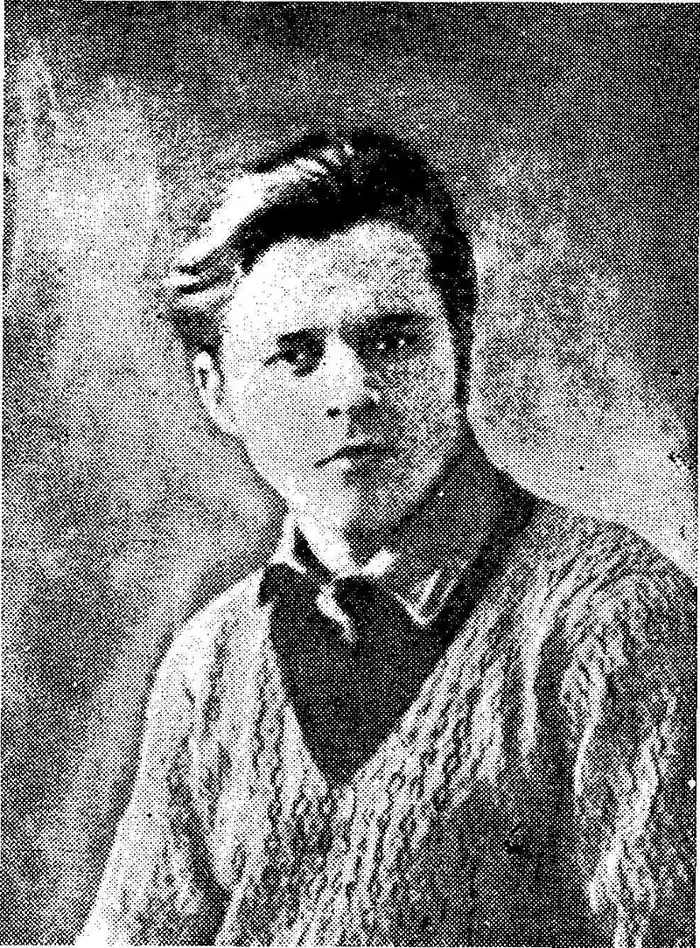

Влизько Олекса Федорович народився 17 лютого 1908 року на станції Боровйонка Крестецького повіту Новгородської губернії, де його батько служив дяком, псаломщиком. Там і почав навчання, а продовжив його на батьківщині діда — в с. Сингаївка на Звенигородщині. У 13 років важко перехворів на скарлатину і втратив слух. Ця травма компенсувалася вольовим розвитком пам'яті, начитаністю: книжка стала для нього одним із основних джерел формування художньої та соціальної свідомості. Він закінчив мовно-літературний факультет Київського інституту народної освіти. 1928 року подорожував по Німеччині, згодом — по нагір'ях Паміру. В літературу його ввів Борис Антоненко-Давидович, надрукувавши в Київському журналі "Глобус" (1925, ч. 22) вірш "Серце на норд". З того часу вірші Влизька починають систематично друкуватися у різних журналах і газетах УРСР. Найчастіше — у футуристичному органі Михайла Семенка "Нова Генерація". Влизько належав до літературної організації "Молодняк" і УСПП.
У першому номері органу ВУСППу "Літературній газеті" були надруковані напутні рядки вірша О. Влизька "Поетові". "Не лицемір, поете, серцем, і не роби із нього шарж, — замало глянути крізь скельця, на бунт, виспівуючи марш" (1927).
Книжка "За всіх скажу" сприймається як відповідь на гострі питання, поставлені дискусією 1925-1928 років, про шляхи розвитку української літератури. Тогочасні критики дали напрочуд високу оцінку поетичному дебютові молодого автора. Визнання перспективного таланту засвідчила і третя премія Наркомосу УРСР, присуджена поетові за збірку "За всіх скажу". 1927 р. у пресі з'явилося повідомлення про загибель Влизька в хвилях Дніпра. Вістка справила приголомшливе враження. Провідний радянський критик Володимир Коряк у некролозі, вміщеному в харківській центральній газеті, навіть оплакував смерть юного поета, говорячи про загибель на самому старті "українського Пушкіна" (В.Коряк "Олекса Влизько" // Комуніст. — 2 серпня 1927р.). Однак інформація виявилася неточною, а сам Влизько спростував некрологи весело-іронічною заявою в пресі та новими книжками: "Живу, працюю!" (1930), "Книга балад" (1930), "Рейс" (1930), "Моє ударне" (1931), "П'яний корабель" (1933), "Мій друг Дон-Жуан" (1934). Однак рання смерть таки була долею Влизька. Як і всі представники демократично мислячої інтелігенції потрапляє за грати, адже бачив в УРСР не що інше, як "рай за дротами". Москві не сподобалось його розуміння індустріалізації — оновлення, модернізація, визволення. Його оголошено "ворогом народу". Виїзною сесією військової колегії Верховного Суду СРСР на закритому засіданні 14 грудня 1934 року, в числі 28-ми інших, О.Влизьку було винесено смертний вирок, який того ж дня було виконано. Ю.Лавріненко у книзі "Розстріляне відродження" зазначає, що "Влизько-поет — це тільки обірваний початок. Або, як він сам про себе писав у передмові до "Живу, працюю!", — "тільки етап і шукання нових форм... До синтетичної рівноваги ще далеко..." З його жадібністю, темпераментом, естетичним поліморфізмом не легко дійти "синтетичної рівноваги" за кілька даних йому долею літ. А все ж елементи власної синтези в ньому вже починали проявлятися. Яків Савченко писав з приводу Влизькової "Дев'ятої симфонії": "Я не знаю нічого кращого в українській поезії останнього десятиліття щодо такої шляхетності думок, такого міцного й суцільно-пафосного піднесення і, нарешті, такої широти й людяності мислення. Це тим паче вражає, що Влизькові всього 19 років". Коротенький восьмирічний літературний шлях Влизька позначений динамічними шуканнями, різнорідністю форм, жанрів, тем. Класицизм, футуризм, "виробнича поезія" й агітка, а над усім і, передусім, активний вітаїстичний романтизм. Твори: "Вибрані поезії" — К.,1963; "Вогонь любові" — К.:1968. Критика: Новиченко Л. Поет недоспіваної пісні // Влизько О. Вибрані поезії.